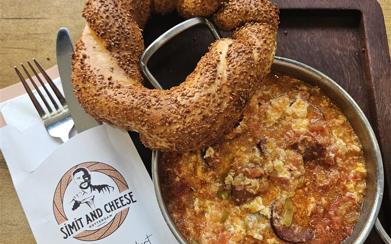
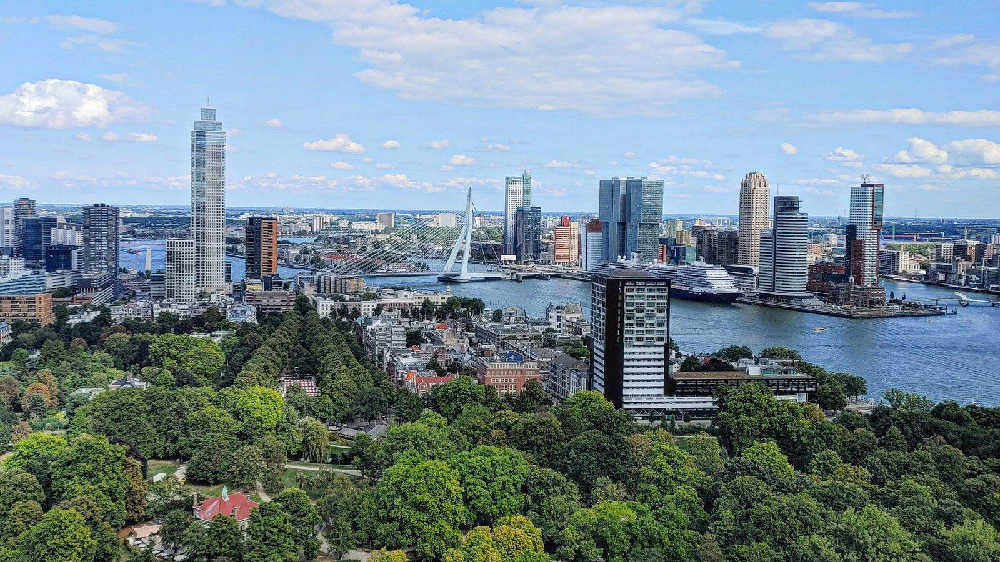
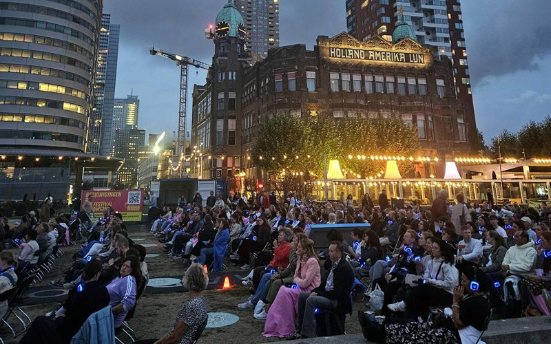
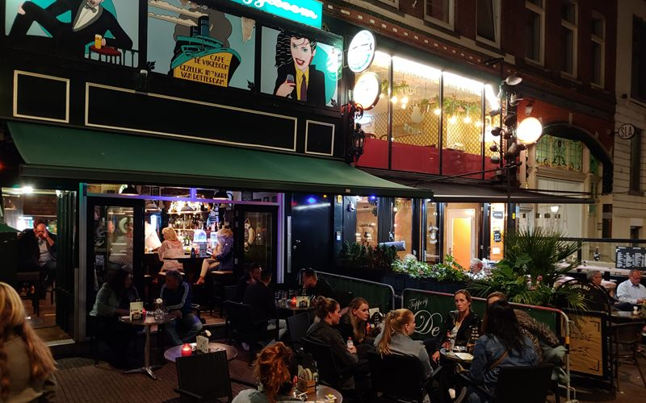

Menemen met sucuk bij Simit and Cheese: een topgerecht op de Beijerlandselaan
De menemen met sucuk die naar verluidt ook de favoriet is van Feyenoordspelers, mét verse simit erbij.
Lees het verhaal →
Skyline, food, kroegen & kidsproof 010. Van Zuid tot Noord, gewoon door een Rotterdammer.

De menemen met sucuk die naar verluidt ook de favoriet is van Feyenoordspelers, mét verse simit erbij.
Lees het verhaal →
Filmkijken in de openlucht naast Hotel New York, met een koptelefoon op en de Erasmusbrug op de achtergrond. De film maakt bijna niet meer uit: die locatie alleen al.
Lees het verhaal →
Al vanaf mijn jeugd onze vaste bruine kroeg, middenin het mooiste kroegenstukje van Rotterdam. Wie puur Rotterdam wil beleven, moet hier gewoon eens langsgaan.
Lees het verhaal →Het populaire pop-up dakpark met eigen bbq's en skylineuitzicht slaat voor het tweede jaar op rij een zomer over. Archieffoto's van tien jaar DÂK, met de belofte: tot 2027.
Lees het verhaal →Helemaal achteraan op de Maasvlakte staat een oude snackbar waar de grootste zeeschepen vlak langs het terras de haven uit varen. Geen toeristenval, gewoon rauw Rotterdam.
Lees het verhaal →Het oude stationsgebouw op de Hofbogen is nu een foodhal met negen keukens, drie bars en een apart restaurant. En bijna niemand kent het terras erboven, precies waar vroeger de trein stopte.
Lees het verhaal →Van buiten loop je er zo voorbij. Van binnen: verse broodjes, plaatpizza en het ultieme vakantiegevoel. Rotterdammers weten het al lang — de rij begint om 11.45 uur.
Lees het verhaal →De eerste surfpool ter wereld midden in een stad. En de beste plek om ’m te bekijken, met een bubble tea uit de Markthal erbij.
Lees het verhaal →Al ruim dertig jaar een échte Italiaan aan de Goudsesingel, met een gastheer die vroeger bij het Scapino Ballet danste. Van zwarte risotto tot ossobuco — nog nooit teleurgesteld.
Lees het verhaal →Nog geen verhalen in deze combinatie — die komen eraan. Volg @rotterdambyferry voor het laatste nieuws.